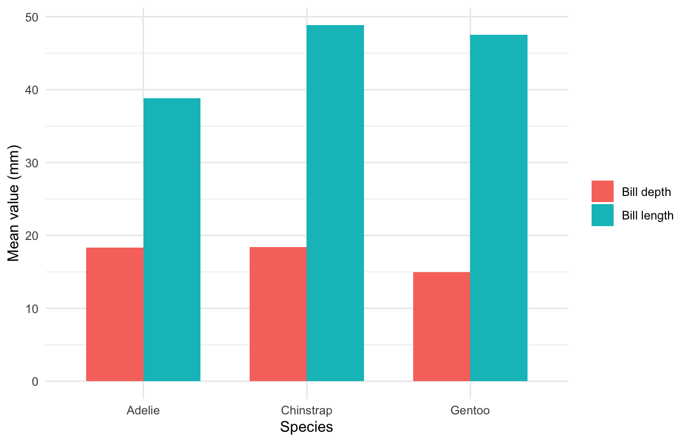

Built with: Python (pandas), R (ggplot2), Quarto, reticulate
Author
Ahmed Muhaimin Choudhury
Published
September 25, 2026
Data: Palmer Penguins, Palmer Station Antarctica LTER, released under CC0.
This post uses both Python and R in one document via the reticulate package. Python (pandas) handles the data summary; R (ggplot2) handles the visualization. A pandas DataFrame is passed from Python into R via py$. The analysis tries to find out which penguin species has the biggest bill in the palmer penguin dataset.
Checking Environment
library(reticulate)use_virtualenv(here::here(".venv")) # point reticulate at the project venvR.version.string
Both outputs above should point inside this repository’s renv/ and .venv/ — confirming the two language environments are project-local.
Data summary (Python)
from palmerpenguins import load_penguinsimport pandas as pd# drop rows missing species or bill measurementspenguins = load_penguins().dropna(subset=["species", "bill_length_mm", "bill_depth_mm"])# mean bill length + depth per speciessummary_df = ( penguins .groupby("species")[["bill_length_mm", "bill_depth_mm"]] .mean() .round(2) .reset_index())
Handoff and table in (R)
The summary_df computed in Python is now available in R as py$summary_df. It arrives as a native R data frame. We use this to render the table using knitr::kable, so that the table looks prettier than reticulate’s basic looking data dump.
knitr::kable(py$summary_df) #knitting a pretty looking table
Table 1: Mean bill length and depth across penguin species.
species
bill_length_mm
bill_depth_mm
Adelie
38.79
18.35
Chinstrap
48.83
18.42
Gentoo
47.50
14.98
Adelie penguins have the shortest bills. Chinstraps and Gentoos have similar bill lengths on average, but Gentoos have noticeably shorter bill depth.
Visualization in R
Now, we will be using R ggplot2 to visualize the data and take a different look at it.
library(dplyr)library(tidyr)library(ggplot2)# reshape the pandas DataFrame from Python into long format for grouped barsplot_data <- py$summary_df |>pivot_longer(cols =c(bill_length_mm, bill_depth_mm),names_to ="measurement",values_to ="mm" ) |>mutate(measurement =recode(measurement,bill_length_mm ="Bill length",bill_depth_mm ="Bill depth" ) )ggplot(plot_data, aes(x = species, y = mm, fill = measurement)) +geom_col(position ="dodge", width =0.7) +labs(x ="Species",y ="Mean value (mm)",fill =NULL ) +theme_minimal()

Figure 1: Mean bill length and depth across penguin species. Data aggregated in Python (pandas), visualized in R (ggplot2).
Inference
The plot shows why bill length alone would misclassify Gentoos. Chinstraps and Gentoos both have long bills (~48mm), and Gentoos have distinctly shorter, blockier bills. But a depth-to-length ratio that sets them apart. Bill length identifies Adelie easily; separating Chinstrap from Gentoo needs depth too. This is a small but concrete example of how interoperability strengthens our modelling by bridging the best of features from 2 different languages.